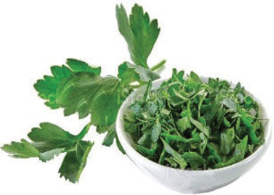
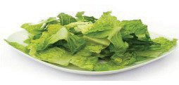
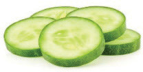

Garnishing involves adding decorative edible ingredients to a savoury dish before serving it. Examples of garnishes include parsley leaves, shredded lettuce, sliced cucumber and grated carrots. They can be used in their raw states or cooked. Garnishes add flavour and nutrients to the dish. They improve colour and add an attractive appearance to dishes. One should consider the following points when garnishing or decorating dishes:
(i)
The colour effect of garnishes or decorations should not dominate the colour of dishes.
(ii)
Some garnishes such as carrot and sweet pepper may undergo a blanching process to kill microbes before use.
(iii)
Arrange garnishes and decorations neatly to get the overall effect.
(iv)
Vary colours and types of garnishes or decorations to avoid monotonous meal appearances.
(v)
The flavour of a garnish or decoration should not interfere with that of the dish.
Commonly used garnishes and their preparations
Garnishes can be prepared in different ways. Table 4.2 shows examples of garnishes and their preparations.
Table 4.2: Type of garnish, how to prepare it and its appearance
| Type of garnish | How to prepare the garnish | Garnish appearance |
|---|---|---|
| Parsley leaves | Clean, chop and sprinkle them onto dishes or use in springs. |
 |
| Lettuce | Wash and cut or shred them. |
 |
| Cucumber | Wash, dry and slice or cut it into the desired shape. |
 |
86